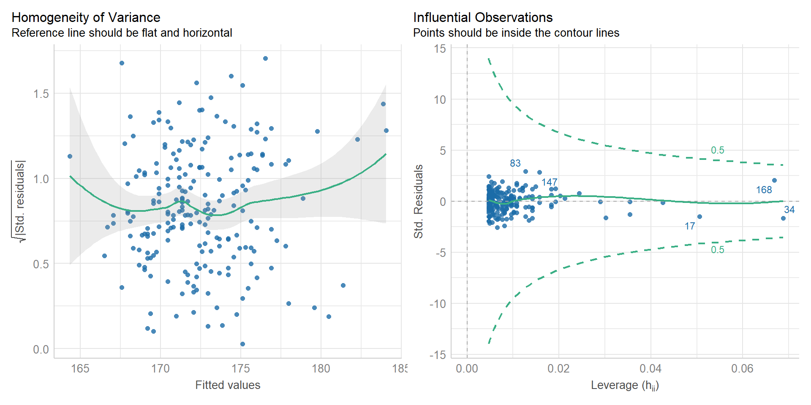

Semana | Tema |
|---|---|
30 oct. al 03 nov. 2024 | - Introducción a los Paquetes y Lenguajes Estadístico. Diferencias entre interfaces gráficas (GUI) y de línea de comandos (CLI). Comparativa entre software privativo y gratuito/open source. |
- R y R-Commander. Navegación del menú. Lectura e importación de archivos de datos. Estadística descriptiva. Agrupamiento de variables. Manejo de factores. Guardado de scripts y resultados. Paquetes y plugins. | |
06 al 09 nov. 2024 | - Relación entre variables numéricas. Covarianza y representación gráfica. Limitaciones. Correlación de Pearson: interpretación del signo y la magnitud.Visualización con correlogramas. Métodos no paramétricos: correlación de Spearman y de Kendall. |
- Introducción al Modelado Estadístico. Modelo lineal general: concepto y supuestos. Bondad de ajuste y análisis de residuos. Regresión lineal simple y análisis de la varianza (ANOVA). Interpretación de los resultados. | |
13 al 16 nov. 2024 | - Regresión Lineal Múltiple. Selección de variables explicativas y control de multicolinealidad. Análisis e interpretación de residuos. |
- Confusión e Interacción. Identificación y roles de las covariables. Control y detección de la confusión. Interpretación de resultados en presencia de interacción. |
Módulo VI: Análisis Epidemiológico Avanzado
Docentes: Tamara Ricardo, Christian Ballejo
Programa de Maestría en Epidemiología para la Salud Pública

PROGRAMA DE LA UNIDAD
ESTRUCTURA DE LA CLASE
Tiempo | Descripción |
|---|---|
18:30hs | Ingreso a la videollamada |
18:40hs | Inicio de la clase |
20:00hs | Receso |
20:15hs | Continuación clase |
21:30hs | Cierre |
OBJETIVOS
- Comprender los fundamentos del modelo lineal general y su aplicación.
- Ajustar modelos lineales utilizando R Commander.
- Interpretar los coeficientes de un modelo lineal.
- Evaluar la bondad de ajuste con el coeficiente de determinación \(R^2\).
- Verificar supuestos del modelo de relación lineal.
INTRODUCCIÓN
La estadística inferencial se basa en modelos para sacar conclusiones o realizar predicciones sobre el comportamiento de fenómenos poblacionales a partir de datos muestrales.
Los modelos estadísticos son representaciones matemáticas que intentan describir, explicar y predecir de la manera más sencilla posible la relación entre dos o más variables.
Modelos determinísticos
Son modelos estadísticos que asumen relaciones exactas entre variables.
Los parámetros y variables se conocen sin error.
Siempre producen el mismo resultado para un mismo conjunto de datos.
No incorporan la variabilidad causada por el azar o la incertidumbre.
Modelo SIR (Susceptibles, Infectados, Recuperados)
Se utiliza para modelar la propagación de enfermedades en poblaciones cerradas.
Asume tasas de transmisión y recuperación constantes.
Limitaciones:
No considera la variabilidad individual.
No pueden aplicarse a poblaciones abiertas (con migraciones o nacimientos).
Resultados sensibles a cambios en parámetros estimados.
Modelos probabilísticos (regresión)
Asumen que los fenómenos observados no son totalmente predecibles, y que ciertas variables están sujetas al azar (componente aleatorio).
No predicen un único resultado; en cambio, generan una distribución de posibles resultados.
Los resultados para un conjunto de datos pueden variar cada vez que se ejecute el modelo.
Los resultados se expresan en términos de probabilidades.
Componentes de un modelo de regresión
Variable dependiente (\(Y\)): también llamada variable respuesta o resultado, representa el efecto observado de un proceso o interacción causal.
Variable/s independiente/s (\(X\)) : también llamadas variables explicativas o predictores, representan la influencia del proceso o interacción que se está midiendo sobre la variable dependiente.
Error aleatorio (\(\epsilon\)): variabilidad no explicada por las variables independientes, atribuible a diferencias individuales y/o a errores de medición o calibración. Puede controlarse aumentando el tamaño de muestra.
Modelos probabilísticos paramétricos
- Asumen que los datos provienen de una distribución con un número fijo de parámetros (media, varianza, etc.).
- Requieren hacer suposiciones explícitas sobre la forma de la distribución de los datos.
- Ejemplos:
- Regresión lineal
- Análisis de la varianza (ANOVA)
- Regresión logística
Modelos probabilísticos no paramétricos
Se utilizan para analizar datos cuya distribución subyacente es desconocida o no sigue una distribución estándar.
Son más flexibles pero requieren de mayor cantidad de datos.
Ejemplos:
Curvas de Kaplan Meier
Regresión de Cox (semiparamétrica)
Modelo lineal general
Modela la relación lineal entre una variable respuesta numérica con distribución normal (\(Y\)) y una o más variables independientes.
Su marco estadístico incluye:
Regresión lineal simple: relación entre \(Y\) y una variable independiente numérica.
Análisis de la varianza (ANOVA): diferencia en la media de \(Y\) respecto a los niveles de una variable categórica.
Regresión múltiple y análisis de la covarianza: relación entre \(Y\) y 2 o más variables independientes.
Matemáticamente se representa como:
\[ Y_i = X_i\beta + \epsilon_i \]
Donde:
\(Y_i\) : vector de valores de la variable dependiente.
\(X_i\): matriz de diseño que contiene las variables independientes.
\(\beta\): vector de coeficientes (parámetros).
\(\epsilon_i\): error aleatorio.
Supuestos del modelo lineal general
Linealidad: La relación entre la variable dependiente y cada variable independiente es lineal.
Independencia: Las observaciones deben ser independientes entre sí.
Homoscedasticidad: La varianza de los errores es constante para todos los valores de las variables independientes.
Normalidad de los errores: Los errores (residuales) del modelo deben seguir una distribución normal.
Regresión lineal simple
- Expresa la relación lineal entre \(Y\) y una variable independiente continua (\(X\)).
- Veamos el scatterplot para la covarianza entre la tasa de mortalidad por cáncer (
tasa_mortalidad) y desempleo (pct_desempleo).
Scatterplot: tasa de mortalidad vs. desempleo
La relación entre estas dos variables podría expresarse mediante la ecuación de la recta:
\[ Y = \beta_0 + \beta_1X + \epsilon \]
Donde:
\(Y\) es la variable dependiente (
tasa_mortalidad).\(X\) es la variable independiente (
pct_desempleo).\(\beta_0\) es el intercepto.
\(\beta_1\) es la pendiente de la recta.
\(\epsilon\) es el término error aleatorio.
Definamos ahora los términos de la ecuación…
Intercepto (\(\beta_0\)):
- Representa el valor esperado de \(Y\) cuando \(X=0\).
- Generalmente no tiene una interpretación realista.
Pendiente (\(\beta_1\)):
- Mide la tasa de cambio \(Y\) por unidad de cambio de \(X\).
- Si \(\beta_1\) toma valores positivos, \(X\) e \(Y\) tienen relación directa, mientras que si \(\beta_1\) es negativa se trata de una relación inversa.
- Sobre este término se basan las hipótesis del modelo:
- \(H_0: \beta_1 = 0\) (No hay relación entre \(X\) e \(Y\))
- \(H_1: \beta_1 \not= 0\) (Relación lineal entre \(X\) e \(Y\))
Error aleatorio (\(\epsilon\))
Variación en la medición de un valor que se debe al azar.
El modelo lineal asume que los errores son independientes y están idénticamente distribuidos (i.i.d) y siguen una distribución normal:
\[ \epsilon \stackrel{i.i.d}{\sim} N(0, \sigma^2) \]
Método de los mínimos cuadrados
Técnica estadística para encontrar la línea de regresión que mejor ajusta un conjunto de datos.
Se basa en minimizar la suma de los cuadrados de las diferencias (errores) entre los valores observados y los valores predichos por el modelo.
La precisión del ajuste se evalúa usando el coeficiente de determinación (\(R^2\)).
Puede visualizarse en el scatterplot agregando la distancia los valores observados y los predichos:
Coeficiente de determinación (\(R^2\))
Indica la proporción de la variabilidad de \(Y\) que explica el modelo de regresión lineal:
\[ R^2 = 1- \frac{STC}{SCE} \]
Donde:
- SCE es la suma de errores cuadrados, es decir, la diferencia entre los valores observados y los predichos por el modelo.
- STC es la suma total de cuadrados, variabilidad total de los valores observados con respecto a su media.
Interpretación
\(R^2 = 1\): indica un ajuste perfecto, donde el modelo explica el 100% de la variabilidad de \(Y\).
\(R^2 = 0\): significa que el modelo no explica ninguna variabilidad de \(Y\), y es equivalente a tomar la media de \(Y\) como predicción constante.
Valores intermedios: cuanto más cerca esté \(R^2\) de 1, mejor será el ajuste del modelo.
Aunque un valor alto de \(R^2\) indica un buen ajuste, no garantiza que el modelo sea adecuado, ya que podría estar sobreajustado o faltar una relación causal.
Residuales
- Los residuos o residuales representan la diferencia entre los valores observados y los ajustados por el modelo.
- Tienen las siguientes características:
- Promedio cero: La suma de los residuales de un modelo de regresión lineal debe ser igual a cero.
- Normalidad: Se espera que los residuales se distribuyan normalmente.
- Independencia: No debe haber patrones evidentes en su distribución.
- Homocedasticidad: No debe haber patrones sistemáticos en la dispersión de los residuales.
Los residuales se analizan gráficamente usando las siguientes herramientas:
Gráficos Q-Q: Comparan la distribución de los residuales con una distribución normal teórica.
Histogramas: Ayudan a visualizar si los residuales se distribuyen normalmente.
Gráficos de dispersión: Muestran los residuales frente a los valores predichos. Un patrón aleatorio sugiere independencia y homocedasticidad.
Gráficos de outliers: muestran la presencia de valores extremos (outliers) o influyentes que puedan distorsionar las estimaciones del modelo.
Normalidad y linealidad
Homocedasticidad y valores extremos
Ejemplo en R Commander
Activar RCommander (
library(Rcmdr) y el pluginKMggplot2.
Cargar la base de datos “
cancer_USA.txt”
Vamos a Estadísticos > Ajuste de Modelos > Modelo Lineal.
En la nueva ventana seleccionamos
tasa_mortalidadcomo variable dependiente ymediana_edadcomo variable explicativa y presionamos Aceptar o Aplicar:
Obtendremos la siguiente salida
Call: lm(formula = tasa_mortalidad ~ mediana_edad, data = datos) Residuals: Min 1Q Median 3Q Max -31.870 -9.631 0.512 9.539 46.770 Coefficients: Estimate Std. Error t value Pr(>|t|) (Intercept) 134.7306 10.9761 12.275 < 2e-16 *** mediana_edad 0.8961 0.2600 3.447 0.000684 *** --- Signif. codes: 0 '***' 0.001 '**' 0.01 '*' 0.05 '.' 0.1 ' ' 1 Residual standard error: 13.88 on 211 degrees of freedom Multiple R-squared: 0.05332, Adjusted R-squared: 0.04883 F-statistic: 11.88 on 1 and 211 DF, p-value: 0.0006835
Call: es la fórmula que usamos para definir el modelo.Residuals: resumen de la distribución de los residuales (mínimo, Q1, mediana, Q3, máximo).Coefficients:Estimate: valores del intercepto y de la pendienteStd. error: errores estándar del intercepto y la pendiente.t value: estadístico \(t\)Pr (>|t|): p-valor de probabilidad dada la hipótesis nula que los coeficientes sean iguales a cero.
Residual standard error: Error estándar de los residuos con sus grados de libertadMultiple R-squared: Coeficiente de determinación \(R^2\)Adjusted R-squared: Coeficiente \(R^2\) ajustadoF-statistic: estadístico \(F\) sobre la hipótesis nula que el cociente entre la varianza de la ecuación de regresión y la varianza de los residuos es igual a 1.p-value: p-valor del estadistico \(F\).
Si en lugar de los coeficientes y sus errores estándar quisiéramos visualizar los intervalos de confianza, debemos calcularlos desde Modelos > Intervalos de Confianza:
Se abrirá la siguiente ventana:
Presionamos Aceptar y aparecerá la siguiente salida:
2.5 % 97.5 % (Intercept) 113.0937459 156.367525 mediana_edad 0.3836788 1.408563
Podemos chequear si la relación lineal es estadísticamente significativa desde Modelos > Test de hipótesis > Tabla ANOVA
Nos aparecerá una nueva ventana:
Presionamos Aceptar y obtendremos la siguiente salida:
Analysis of Variance Table Response: tasa_mortalidad Df Sum Sq Mean Sq F value Pr(>F) mediana_edad 1 2289 2289.04 11.883 0.0006835 *** Residuals 211 40644 192.63 --- Signif. codes: 0 '***' 0.001 '**' 0.01 '*' 0.05 '.' 0.1 ' ' 1
Para el análisis de residuales vamos a Herramientas > Cargar paquetes y seleccionamos la librería
performance.
A continuación escribimos el siguiente comando y presionamos Ejecutar:
check_model(mod1)Se nos abrirá una nueva ventana con la salida del análisis de residuales.
Podemos obtener los resultados del test de normalidad escribiendo el siguiente código y presionando Ejecutar:
check_normality(mod1)Nos aparecerá la siguiente salida:
OK: residuals appear as normally distributed (p = 0.378).
Para el test de homogeneidad de varianzas escribimos el siguiente código y presionamos Ejecutar:
check_heteroscedasticity(mod1)Nos aparecerá la siguiente salida:
OK: Error variance appears to be homoscedastic (p = 0.422).
Para evaluar la presencia de valores extremos, escribimos el siguiente código y presionamos Ejecutar:
check_outliers(mod1)Nos aparecerá la siguiente salida:
OK: No outliers detected. - Based on the following method and threshold: cook (0.7). - For variable: (Whole model)
Interpretación
La tasa de mortalidad por cáncer (
tasa_mortalidad) disminuye significativamente (p = 0,0007 ) a medida que aumenta la edad (mediana_edad).Este modelo solo explica un porcentaje muy bajo de la variabilidad observada en los datos (\(R^2 =\) 0.0488295).
Los residuos cumplen con los supuestos de normalidad, linealidad y homogeneidad de varianza.
No se detectaron valores extremos.
Análisis de la varianza (ANOVA)
Compara la media de la variable independiente \(Y\) entre niveles de una variable explicativa categórica (\(X\)).
Al igual que en la regresión lineal simple, se asume que los residuales son normales y homocedásticos.
Se basa en la hipótesis estadística de que los grupos son distintos entre sí:
\(H_0: \mu_1 = \mu_2 = ... = \mu_i\) (la media de \(Y\) no difiere entre grupos)
\(H_1: \mu_1 \not= \mu_2 \not= ...\not=\mu_i\) (la media de \(Y\) difiere entre grupos)
La variabilidad entonces se descompone en variabilidad entre grupos (SSB) y variabilidad dentro de los grupos (SSE).
Para evaluar si existen diferencias en las medias de los grupos se utiliza el estadístico \(F\) :
\[ F = \frac{SSB/(k-1)}{SSE/(n-k)} \]
donde:
\(k\) es el número de grupos
\(n\) es el número de observaciones
Valores altos de \(F\) indican que existen diferencias en las medias de los grupos.
Para saber cuáles grupos son diferentes entre sí, hay que realizar tests post-hoc de comparaciones múltiples.
Ejemplo en R Commander
Vamos a Estadísticos > Ajuste de Modelos > Modelo Lineal.
En la nueva ventana seleccionamos
tasa_mortalidadcomo variable dependiente yestadocomo variable explicativa y apretamos Aceptar o Aplicar.Nos aparecerá la salida del modelo (ignorar por el momento).
Vamos al menú Modelos > Test de hipótesis > Tabla ANOVA.
En la nueva ventana presionamos Aceptar.
Obtendremos la siguiente salida:
Analysis of Variance Table Response: tasa_mortalidad Df Sum Sq Mean Sq F value Pr(>F) estado 8 5568 695.96 3.7997 0.0003514 *** Residuals 204 37366 183.16 --- Signif. codes: 0 '***' 0.001 '**' 0.01 '*' 0.05 '.' 0.1 ' ' 1
Para realizar el test de comparaciones múltiples cargamos el paquete
emmeans:
En la consola de R Commander creamos el objeto
compusando el siguiente código:comp<- emmeans(mod2, specs = "estado", contr = "pairwise")Presionamos Ejecutar.
Para visualizar los resultados del test de comparaciones múltiples escribimos el código:
plot(comp)y presionamos Ejecutar.
Nos aparecerá una nueva ventana con el siguiente gráfico:
Debemos observar entre cuáles grupos no se superponen los intervalos de confianza.
Otra opción es escribir
compen la consola y Ejecutar para que nos aparezca la tabla de comparaciones múltiples.contrast estimate SE df t.ratio p.value Connecticut - Maine -25.44 5.86 204 -4.341 0.0007 Connecticut - Massachusetts -7.09 6.00 204 -1.182 0.9596 Connecticut - New Hampshire -13.17 6.42 204 -2.051 0.5098 Connecticut - New Jersey -10.92 5.62 204 -1.942 0.5854 Connecticut - New York -13.93 5.08 204 -2.739 0.1408 Connecticut - Pennsylvania -17.35 5.08 204 -3.418 0.0213 Connecticut - Rhode Island -8.26 8.29 204 -0.997 0.9858 Connecticut - Vermont -18.56 6.00 204 -3.094 0.0562 Maine - Massachusetts 18.35 4.95 204 3.705 0.0082 Maine - New Hampshire 12.27 5.46 204 2.249 0.3784 Maine - New Jersey 14.52 4.49 204 3.232 0.0377 Maine - New York 11.51 3.80 204 3.033 0.0666 Maine - Pennsylvania 8.09 3.78 204 2.139 0.4500 Maine - Rhode Island 17.18 7.57 204 2.270 0.3653 Maine - Vermont 6.88 4.95 204 1.389 0.9010 Massachusetts - New Hampshire -6.08 5.60 204 -1.085 0.9758 Massachusetts - New Jersey -3.83 4.67 204 -0.821 0.9961 Massachusetts - New York -6.84 4.00 204 -1.708 0.7410 Massachusetts - Pennsylvania -10.26 3.99 204 -2.569 0.2063 Massachusetts - Rhode Island -1.18 7.67 204 -0.153 1.0000 Massachusetts - Vermont -11.47 5.12 204 -2.243 0.3824 New Hampshire - New Jersey 2.25 5.20 204 0.432 1.0000 New Hampshire - New York -0.76 4.61 204 -0.165 1.0000 New Hampshire - Pennsylvania -4.18 4.60 204 -0.908 0.9923 New Hampshire - Rhode Island 4.91 8.01 204 0.613 0.9995 New Hampshire - Vermont -5.39 5.60 204 -0.962 0.9888 New Jersey - New York -3.01 3.42 204 -0.880 0.9938 New Jersey - Pennsylvania -6.43 3.40 204 -1.888 0.6228 New Jersey - Rhode Island 2.66 7.38 204 0.360 1.0000 New Jersey - Vermont -7.64 4.67 204 -1.636 0.7840 New York - Pennsylvania -3.42 2.41 204 -1.418 0.8899 New York - Rhode Island 5.67 6.98 204 0.811 0.9964 New York - Vermont -4.63 4.00 204 -1.156 0.9644 Pennsylvania - Rhode Island 9.08 6.98 204 1.302 0.9297 Pennsylvania - Vermont -1.21 3.99 204 -0.304 1.0000 Rhode Island - Vermont -10.30 7.67 204 -1.342 0.9174 P value adjustment: tukey method for comparing a family of 9 estimates
Finalmente chequeamos los supuestos de residuales con
check_model(mod2):
Interpretación
La tasa de mortalidad por cáncer (
tasa_mortalidad) difiere significativamente entre los estados de la Costa Este (p < 0,001 ).Se encontró que la tasa de mortalidad en Connecticut es significativamente menor que en Pennsylvania y Maine.
La tasa de mortalidad en Maine es significativamente mayor que en Massachusetts, New Jersey y New York.
Los residuos cumplen con los supuestos de normalidad, linealidad y homogeneidad de varianza.
No se detectaron valores extremos.
Resumiendo…